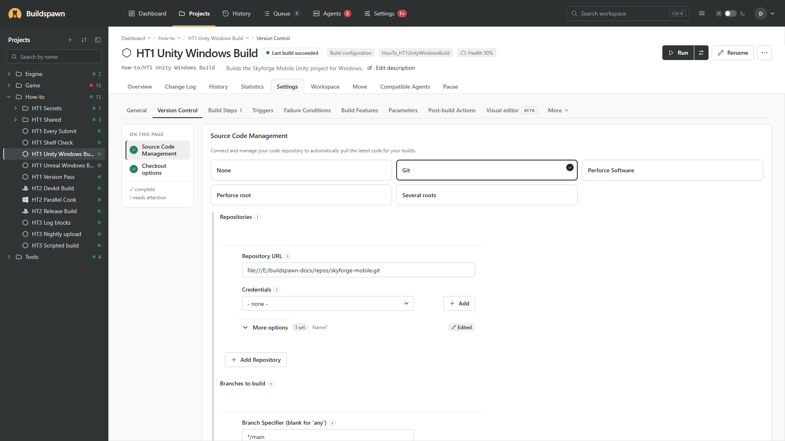
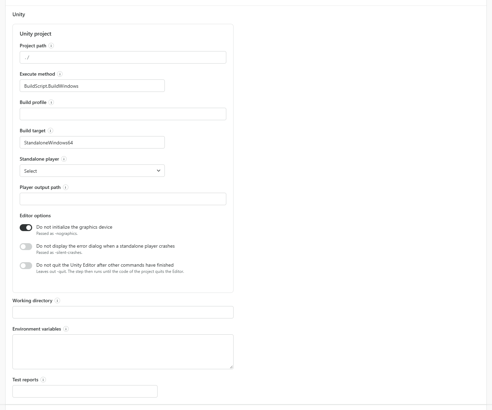
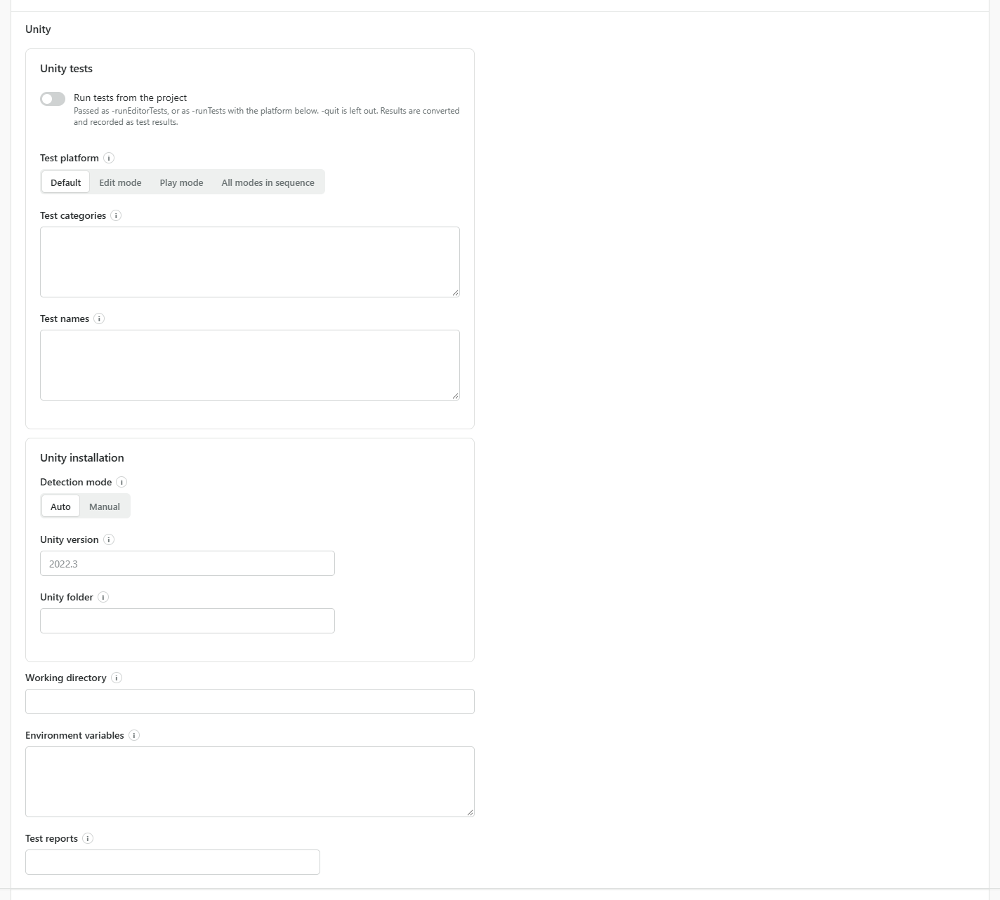
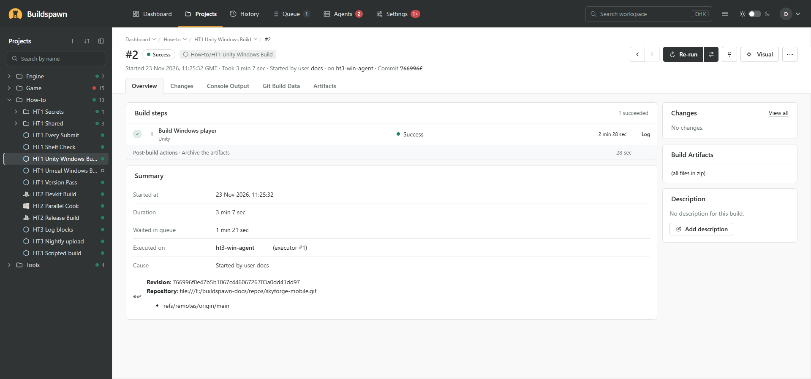
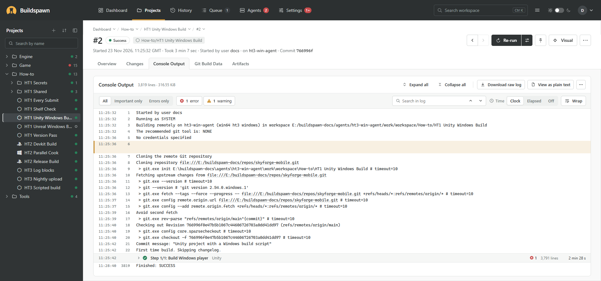

Build a Unity project from Git
Check out a Unity project from Git and build a Windows player with the Unity Editor in batch mode.
Before you start
- A project to hold the build configuration. See Projects.
- The Git repository of your Unity project: its address, the branch, and credentials if it is private (an SSH key or an access token).
- A build script in the project: a static method in a class under
Assets/Editorthat callsBuildPipeline.BuildPlayer. There is an example below. - An agent with the Unity Editor installed through Unity Hub, ideally the version your project uses, and the
gitcommand. Open the agent and click the Unity tab to see which Editors it found.

This is the build script used in this guide, in Assets/Editor/BuildScript.cs:
using UnityEditor;
public static class BuildScript
{
public static void BuildWindows()
{
var scenes = new[] { "Assets/Scenes/Main.unity" };
BuildPipeline.BuildPlayer(scenes, "Builds/Win64/SkyforgeMobile.exe",
BuildTarget.StandaloneWindows64, BuildOptions.None);
}
}Steps
Create the build configuration and connect Git
- Open your project, click New Item, type a name such as
Mobile Windows Build, choose Freestyle project and click OK. - On the Settings tab, click Version Control and choose Git.
- Type the Repository URL, for example
https://git.studio.example/skyforge/mobile.git. - Pick the Credentials, or click Add to add an access token or SSH key. A public repository needs none.
- Under Branches to build, type the branch in Branch Specifier, for example
*/main. - Click Save.

Add Library/, Temp/, Logs/ and Builds/ to your .gitignore. Unity rebuilds them, and they make checkouts slow.
Add the Unity step
- Click Build Steps, then Add build step. Type
Unityin Filter step types and click the Unity tile. - In Step name, type
Build Windows player. - Leave Project path empty if the Unity project is at the top of the repository. Otherwise type its folder, for example
Mobile. - In Execute method, type the class and method of your build script:
BuildScript.BuildWindows. The box suggests methods it found inAssets/Editorafter a first checkout. - In Build target, type
StandaloneWindows64. Unity switches to that platform before the project loads. - Keep Do not initialize the graphics device ticked. Build machines often have no screen.

With no build script, choose a Standalone player and fill in the Player output path instead. On Unity 6 you can also name a Build profile asset.
- Under Unity installation, leave Detection mode on Auto. In Unity version, type the version your project needs, for example
2022.3. Left empty, the step uses the version inProjectSettings/ProjectVersion.txtif the agent has it, and the newest Editor on the agent if not. - To run your tests too, tick Run tests from the project under Unity tests and pick a Test platform. The step records the test results on the build.
- Click Save.

Keep the player and run it
- Click Post-build Actions, add Archive the artifacts and type
Builds/**in Files to archive. Click Save. - Click Run.
Check it worked
Open the build. The Build steps card shows Build Windows player with the Unity runner and its result, the summary shows the commit it built, and the player is under Build Artifacts.

On the Console Output tab, the Git checkout comes first, then one block for the Unity step. Expand it to read the Unity log. The first lines name the Editor the step picked and the full command line it ran.

Troubleshooting
The wrong Unity version ran
In Auto mode with an empty Unity version, the step takes the newest Editor on the agent when the project's own version isn't installed. Unity then upgrades the project in the workspace. Type the version in Unity version, and install that version on the agent. Check the agent's Unity tab and click Check again after you install it.
The step can't find a Unity Editor
The agent looks in Unity Hub's list, the usual install folders and the UNITY_HOME and UNITY_HINT_PATH variables. The agent must run as the user who installed Unity Hub. For an Editor in another folder, set Detection mode to the manual mode and fill in Unity folder.
Unity says the executeMethod class could not be found
The class must be in a folder named Editor and the method must be public static. Type it as ClassName.MethodName, with the namespace in front if the class has one.
A passed step shows a red error count
Unity prints some messages as errors even when the build works, for example from its licensing client. The step result comes from Unity's exit code. Click the count to jump to the line and decide if it matters.